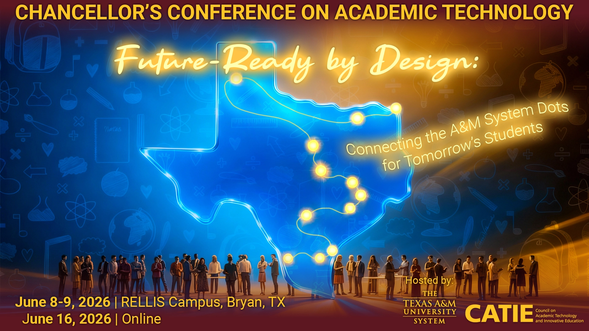
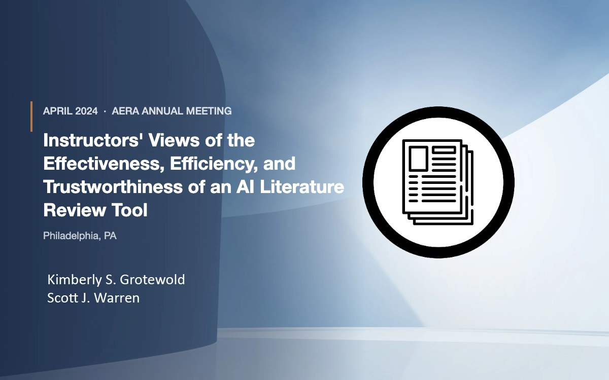

Ethics before adoption
Every tool we introduce into a classroom or library must pass a clear bar for transparency, student agency, and just outcomes. The ECET AI Framework exists to make that evaluation concrete.
Advancing the ethical, equitable integration of artificial intelligence in higher education, libraries, and learning design.

I’m a tenacious learning technologies researcher, instructional designer, and educator working at the intersection of applied research, learning experience design, and higher education leadership.
With 18 years of experience across higher education, K–12 schools, and public libraries, my work centers on the intentional, ethical, and equitable integration of emerging tools — particularly artificial intelligence — into teaching and curriculum design.
Having earned my Ph.D. in Learning Technologies from the University of North Texas, I developed the ECET AI Framework, a decision-support tool to help educators evaluate AI products. My scholarship on AI adoption, instructional design, and open educational resources has been published in various venues, including the Journal of Interactive Learning Research, the Decision Sciences Journal of Innovative Education, and the International Journal of Designs for Learning.
Currently, as the AI Librarian and Library Innovation Lab Supervisor at Texas A&M University-San Antonio, I champion generative AI awareness and responsible adoption among students, staff, and faculty. Previously, as Vice Chair and Chair of the Texas A&M University System’s CATIE, I coordinated AI professional development and the sharing of best practices across 11 institutions and 8 agencies.
Three commitments shape how I lead teams, design learning, and integrate emerging technology.
“Technology should extend access, not compress or negate human capabilities. My job is to make sure it does.”
Every tool we introduce into a classroom or library must pass a clear bar for transparency, student agency, and just outcomes. The ECET AI Framework exists to make that evaluation concrete.
Accessibility, language access, and varied learning preferences aren’t add-ons. They’re the starting point of good instructional design — and the baseline for any leadership decision.
Real change in higher education requires coordinating across departments, roles, and disciplines. I thrive in cross-functional settings where varied perspectives are brought together to solve problems and chart a shared direction forward.
Two decades of leadership across academic libraries, faculty development, and learning design. Select any role to expand.
I shape how faculty, staff, and students at Texas A&M University-San Antonio understand and use generative AI for research and scholarship through direct instruction, resource development, and leadership on the University AI Steering Committee and the Texas A&M System’s Council for Academic Technology and Innovative Education (CATIE). I also launched and supervise the Library Innovation Lab and serve as the education subject librarian for the College of Education and Human Development.
I have connected students, faculty, and staff across four education departments to library resources and research expertise through instruction, consultations, proactive outreach, and digital learning materials. I have managed a substantial portion of the library’s e-book/print book budget, contributed to accreditation and program review documentation, and partnered with campus and system units to provide faculty development programming, including a stipend-supported OER initiative. I have collaborated with Graduate Studies as an active member of the Graduate Faculty Council and have been involved with student orientations and GA training. Much of this work continues through my new role.
I served as the information literacy and research instruction lead for the Lebanon Campus. I was the collegewide subject-area liaison for Communication, Humanities, and the Arts, directing library liaison and collection efforts for those disciplines. I co-chaired the Professional Development Committee, helped build an institution-wide librarian onboarding program and an instruction assessment toolkit, and designed a faculty questionnaire to evaluate and strengthen the instructional program. I actively contributed to shared governance and campus initiatives focused on teaching excellence, accessibility, and academic technology.
I co-created and facilitated a first-of-its-kind stipend-supported research fellows program for undergraduate music majors, guiding students through individual and faculty-collaborative research projects within a peer learning community. I managed all program logistics from developing the application and co-leading fellow selection to presenting budget requests to the Dean of Arts and Humanities. I also helped build a shared repository of information literacy resources as the program expanded to other disciplines and co-presented with the fellows at a systemwide convening to demonstrate its impact and replicability.
I provided responsive, multi-channel research support to students by planning and delivering information literacy instruction for English writing, music, and first-year experience courses, as well as conducting research consultations. Additionally, I collected and organized data from library reference interactions to create FAQ content for the library website, translating patterns in student questions into a practical, scalable resource.
I supported developmental and freshman-level writers through a high-volume teaching load of up to 14 hours per week across multiple writing lab sections. I was also among the first instructors to teach the ENG 1301 lab in a fully online format. This was an early and formative experience that laid the groundwork for my ongoing commitment to accessible, technology-enhanced instruction.
Peer-reviewed work on AI adoption in education, doctoral program design, and faculty development.
International Journal of Designs for Learning
The authors leveraged Ethics of Care Theory and Soft Systems Methodology to transform a doctoral program into a more supportive, student-centered environment aimed at increasing success and retention. The study detailed the eight soft systems steps used in the redesign process, presented the program review actions aligned to a 12-month calendar, described challenges that arose, and suggested ongoing and future solutions.
doi.org/10.14434/ijdl.v15i3.37812Decision Sciences Journal of Innovative Education (DSJIE)
This study examined how the COVID-19 pandemic impacted the perceived digital teaching skills of business faculty in the southwest United States. Using the UNESCO teacher competency framework, researchers surveyed professors who transitioned to remote instruction with minimal training in 2020. Results indicated significant growth in instructors’ self-perceived proficiency across digital communication, virtual office hours, synchronous and asynchronous class delivery, digital assessment, and feedback.
doi.org/10.1111/dsji.12317Journal of Interactive Learning Research
This research explored teachers’ perspectives on implementing generative AI (GAI) in education, shortly after OpenAI's public release of ChatGPT. It provided early results indicating that educators generally held positive views toward the technology regardless of their teaching style. The data suggested that increased frequency of GAI use correlated with more favorable attitudes, with many teachers viewing it as a valuable asset for both professional development and student support.
learntechlib.org/primary/p/222363In Reimagining Education: Studies and Stories for Effective Learning Practices in an Evolving Digital Society
Eds. D. Cockerham, R. Kaplan-Rakowski, W. Foshay, & J. M. Spector
Springer
This chapter reviewed privacy literacy literature and its implications for librarians and learners. It defined privacy literacy (PL) in K–12 and higher education contexts, described PL-oriented librarian responsibilities, examined existing PL curricula, and advocated for librarians to embed additional PL-related content into digital citizenship curricula and instruction.
In Using Open Educational Resources to Promote Social Justice
Eds. C. J. Ivory & A. Pashia
Association of College & Research Libraries Press
This chapter provided an overview of the potential transformative power of adopting open educational resources (OER) in educational settings. By analyzing several examples of institutions’ OER practices and policies through the lenses of cost savings, culturally responsive teaching, digital equity, and compounding impacts, the authors present a roadmap for promoting and extending OER use in K–12 and higher education.
Expected completion in January 2027
The ECET Framework developed for a broad landscape of educational technology products and use cases is being revised for generative AI adoption decisions.
Recent presentations on AI in education, instructional design, and academic library innovation.

Chancellor’s Conference on Academic Technology, June 2026
Amigos Library Services: The Hive AI Tips and Tricks Online Webinar

AERA Annual Meeting, Philadelphia, PA
Recent and ongoing projects supporting university students, faculty, and staff.

Instructional content aligned with ISTE educator technology standards and Texas Technology Applications Learning Outcomes. Designed for use by undergraduate students pursuing teacher certification.

Informational website providing detailed information, policies, and resources related to the services offered by the Library Innovation Lab. The site also includes a link to the production request project submission form.

Short description of this creative endeavor.

Short description of this creative endeavor.
Warm editorial — sienna accent, serif-adjacent sans. Balanced and modern.